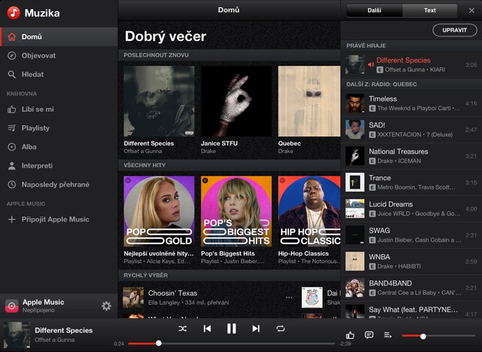
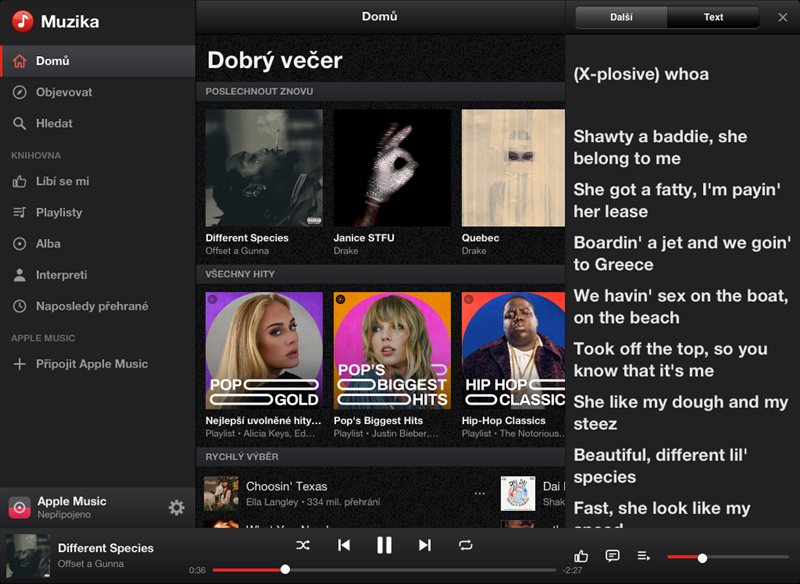
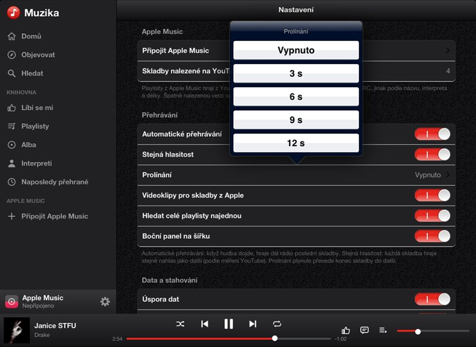
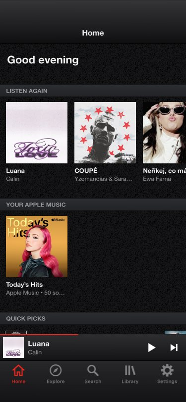
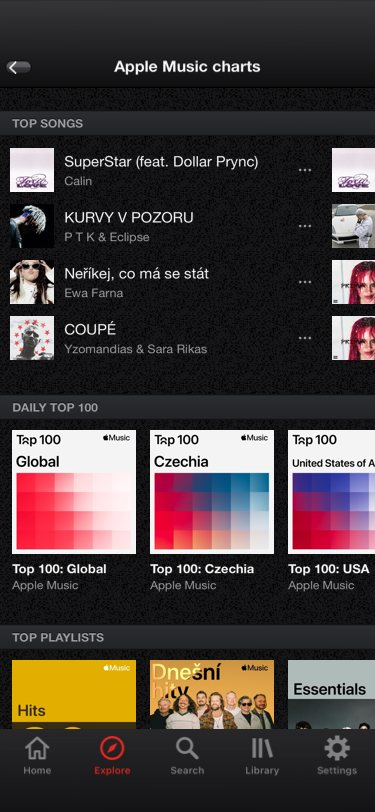
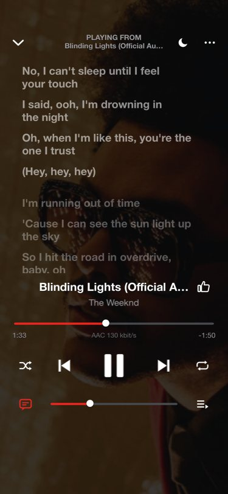
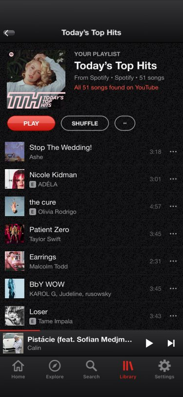

Muzika
YouTube Music with your Apple Music library, lyrics and downloads
YouTube Music with your Apple Music library, lyrics and downloads
An unofficial YouTube Music client in the look of the iOS 6 years: dark textured panels, glossy black bars, YouTube red. No account is needed: the music comes straight from YouTube to the device. Connect your Apple Music library and its playlists, songs, albums and artists play from YouTube Music, every song found by its ISRC code. Spotify and YouTube playlists come in by their link.







Unofficial apps by samcejko, not affiliated with or endorsed by Twitch, Google, Apple, TikTok, Instagram, Meta, Spotify, Kick, NVIDIA, Mojang, Microsoft, OpenRouter, Vine, X, diVine or the Moonlight, Sunshine and Apollo projects.